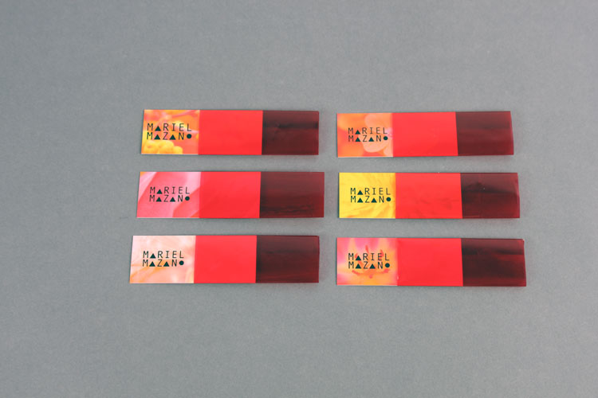

ILLUSION OF COLOUR
Quantum physicist Dr John Wheeler suggests that how we choose to observe a particle determines not only what it is doing now but what it did to get there (Double slit experiement). In his practice towards discovering the secrets of the universe he couldn't escape the fact that consciousness and the universe where interrelated. How we choose to observe and measure something we perceive. To explain this theory I took on the subject of colour. Do we all see the same colours? Is grass green? Or is it the light that is green? Is it the mind that is green?. Creating a visually orientated 60page book that enlightens these questions with colour illusions and exercise sheets the public can interact with.


- 
3
go back